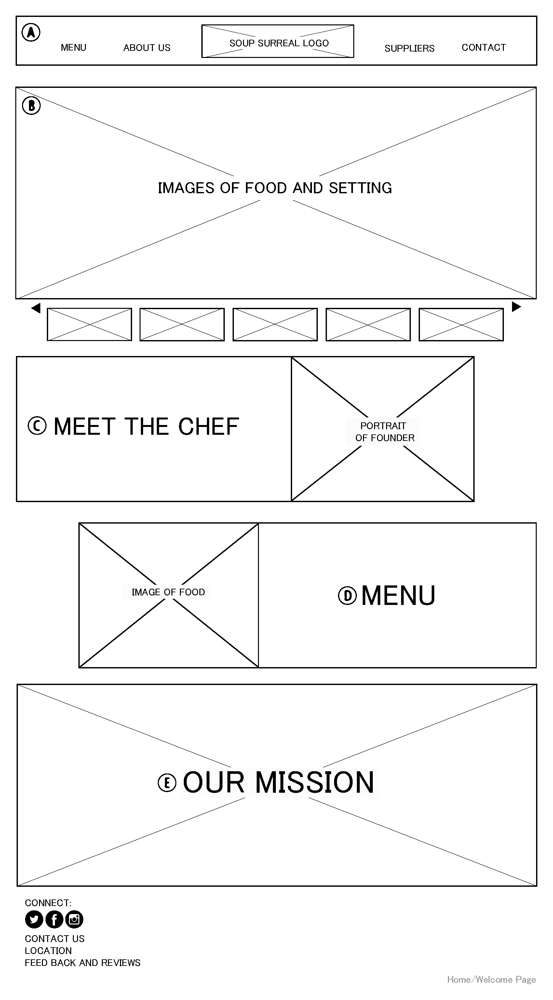
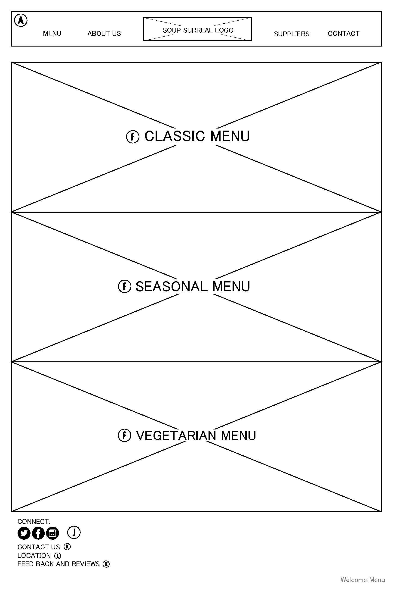
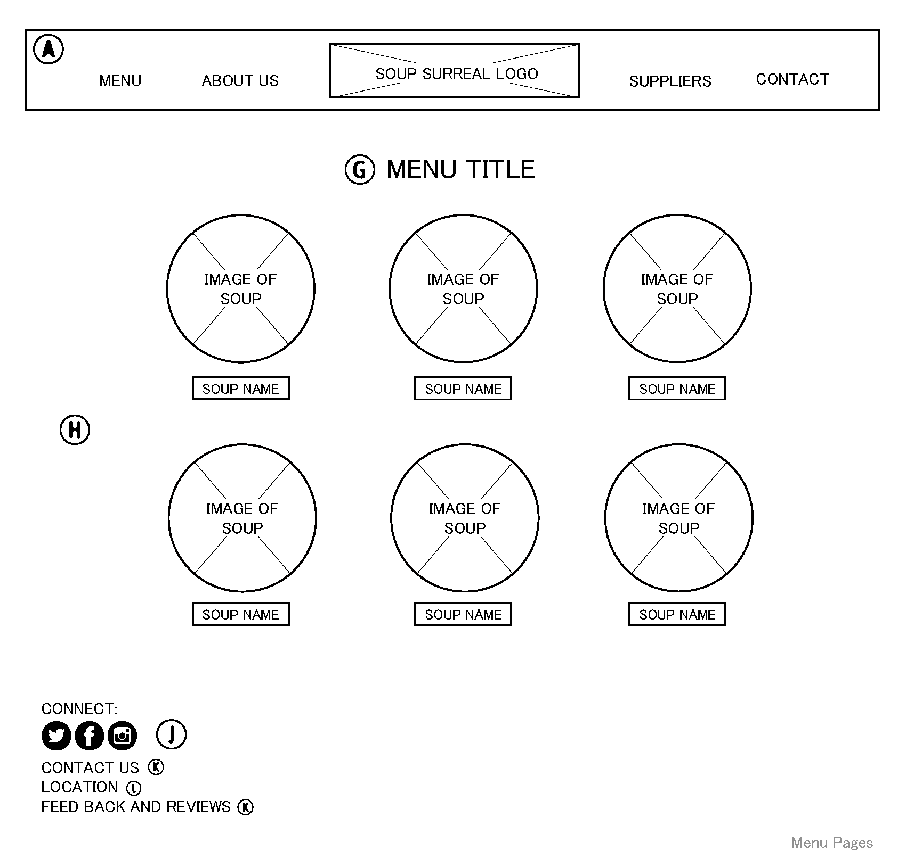
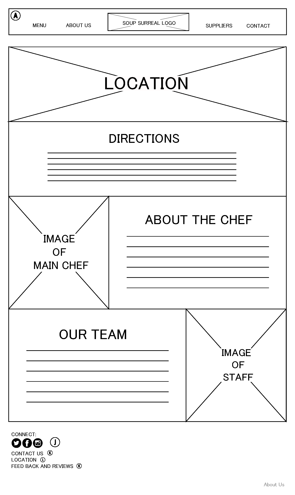
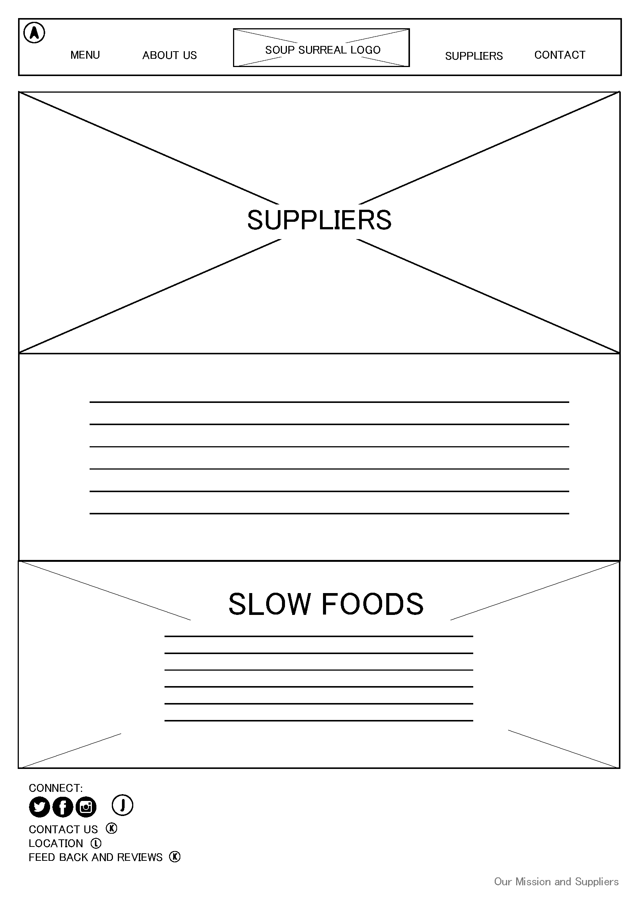
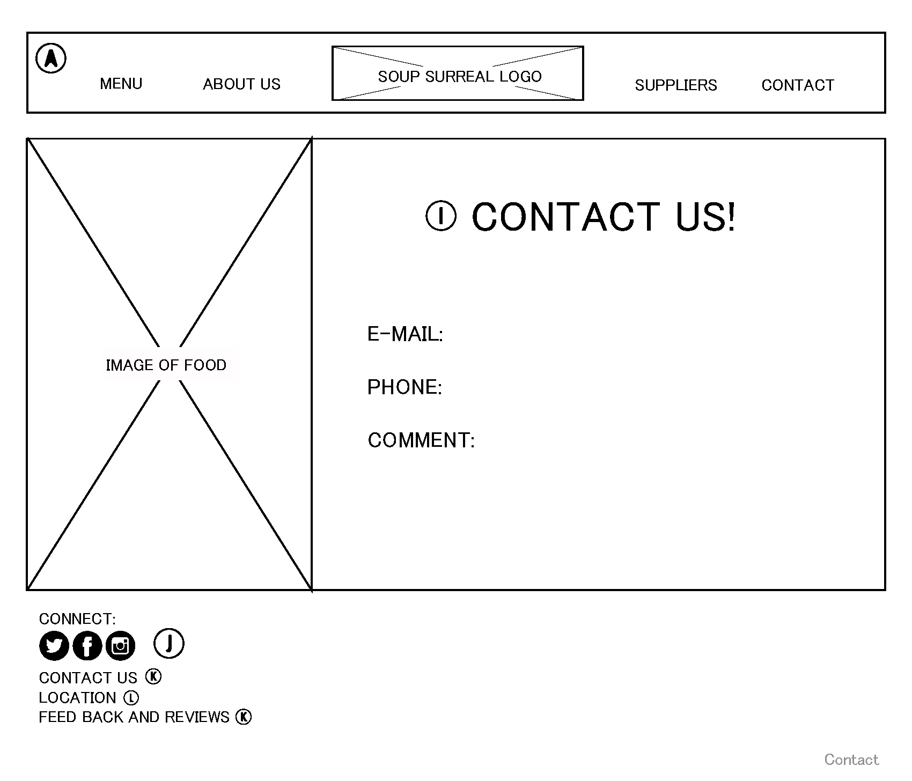
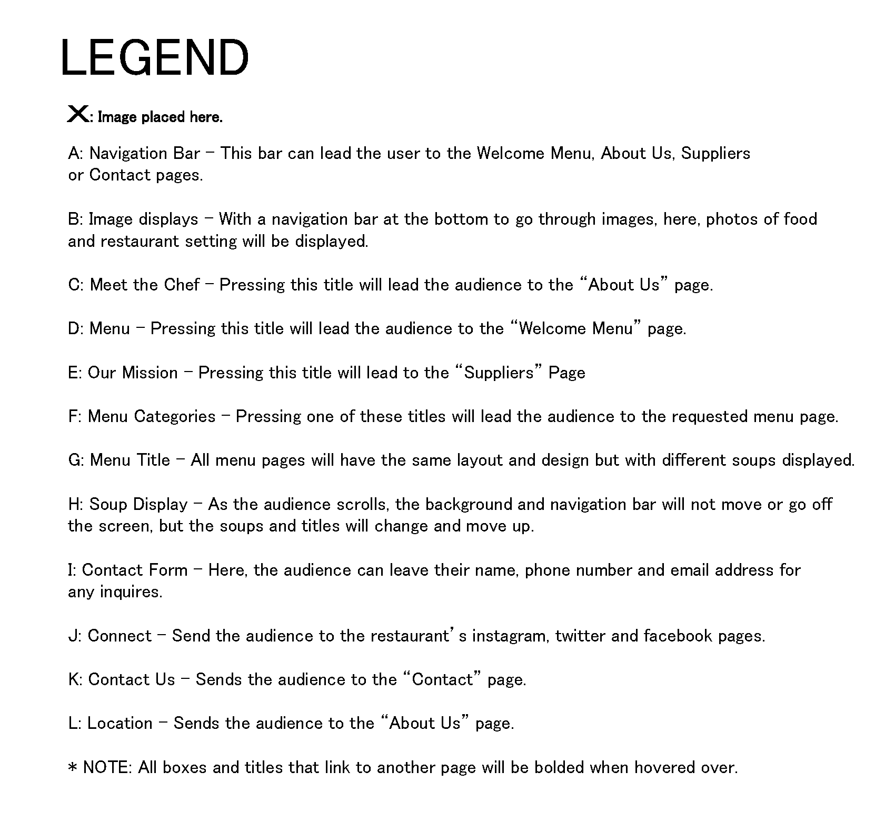
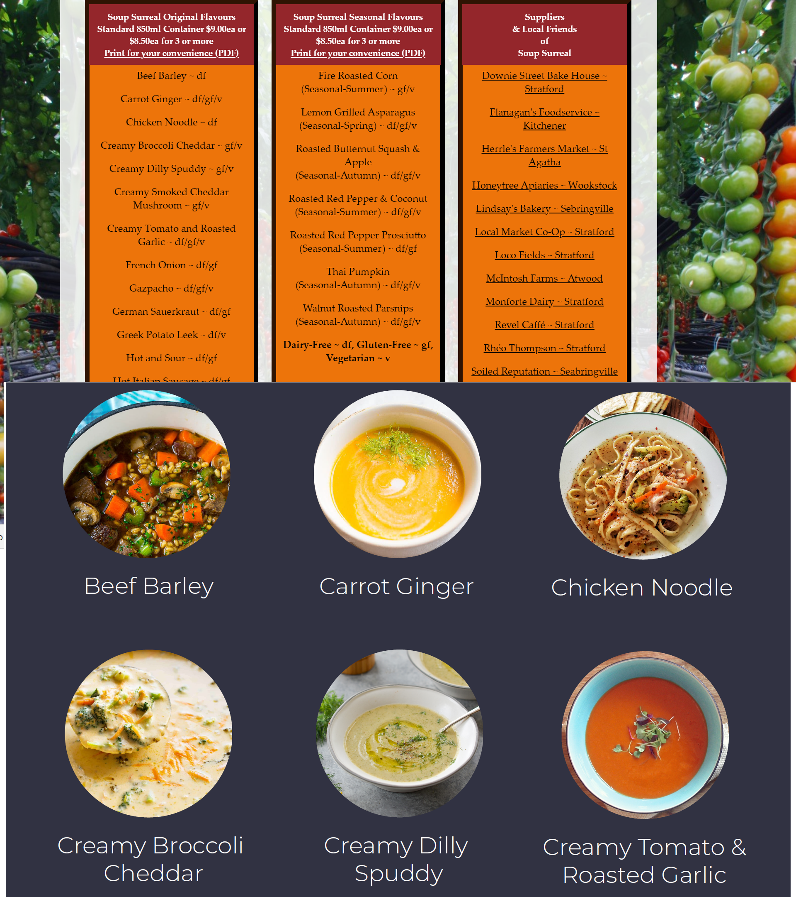
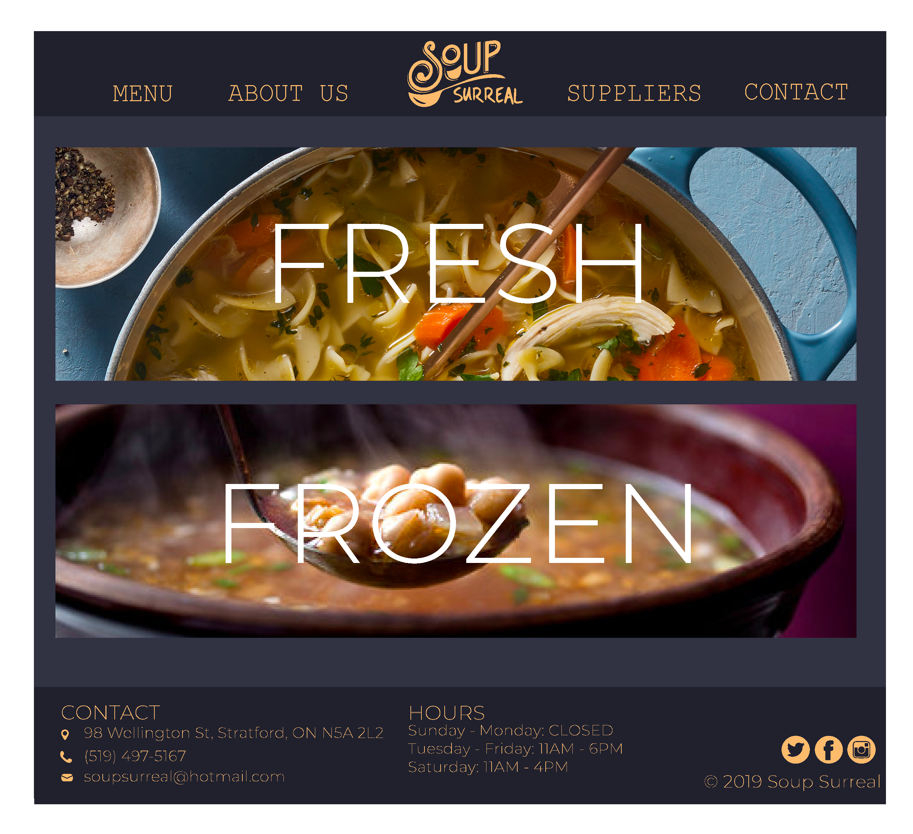
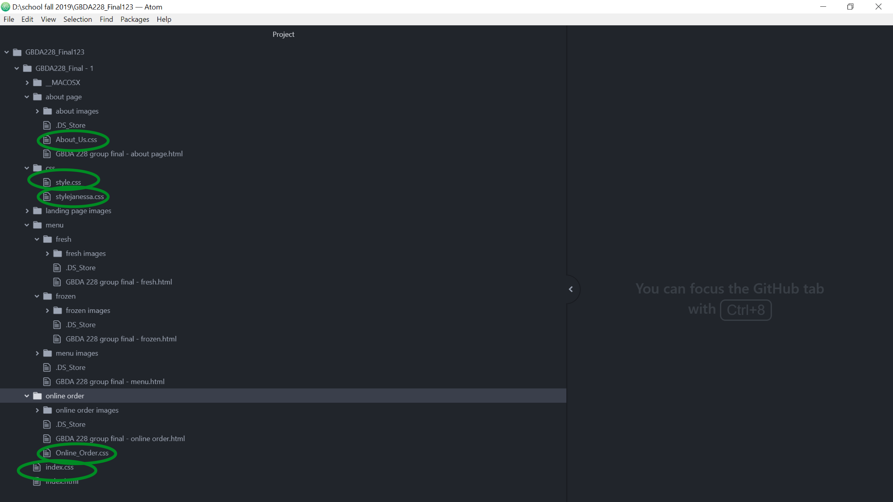

Context
Over the course of three months my team of two and I re-designed the website of a local Stratford based resturant ‘Soup Surreal’. Through client and user research we came up with mockups for our new website, executed those mockups through the use of HTML and CSS and presented our final Product. We created a modern and more user friendly site with more effective features.
Problem
The issue we focused on addressing was the lack of function and usability of the Soup Surreal website. The site had two main issues; a confusing layout with difficult to find information, and a design that was not aesthetically pleasing.
Vision Statement
Our goal was to improve the ease of use of the website and focusing its purpose
by removing any unnecessary aspects, improving the quality of visuals, and creating
a better user flow.
The design we created limited the amount of information on the website by limiting
the amount of pages the website contained to focus the purpose of why the site existed.
We organized the content with more contrast and better quality images to improve the
aesthetic feel and improve the searchability of things like the menu sections. Finally
we added an entirely new online order section to improve the interaction with the site.
Research
Before even considering a redesign for the website we needed to know more about what soup surreal is, the purpose of the website, the customers of soup surreal and why they would use the website. Each member of our group researched a separate area about Soup Surreal and we accumulated our data into a report to summarize and analyse our findings. I personally researched about the customer demographic and who is going to be using the website, while my counterparts looked into information about the surrounding area and culture of soup surreal, as well as critiquing the existing design of the site. We found that in general people use soup surreal as a quick and easy meal, either picking up frozen soup or a take out order; while people are able to dine in most don’t. Most people going to the restaurant are locals to the Stratford area and who have been to the restaurant before. Below is a summary of our findings.
As seen in our report, we created a site map for our new site to visualize the flow of it. We decided we wanted to create a site that would cater to the existing customers but would also be attractive enough to start catching the eyes of new clientele. We decided on details of style and layout and began working on the wireframing phase.
Designs
Initially we worked together to create a wireframe for the layout of our site. As the HTML lead I wanted a solid layout that was easy to reference so that when building the HTML framework the workflow would be very smooth. Below is our initial wireframe.






Since we knew an aesthetic upgrade was a large part of the redesigning the flow and the visuals of the site. We Used Adobe Illustrator to create the high fiedlity mockup, which included all 6 pages of the site and what they would exactly look like. This was crucial when it came to creating the HTML framework. Below are comparisons from the past site to our mockups


High Fidelity Mockup





Building The Site
Now that we had all the designs finalized, we began building the actual website. I solely created the HTML layout using Atom as my text editor. Starting with the landing page and creating separate folders for each other HTML file so that the file tree matched with our site map. Since our design simplified the site, the HTML file structure was fairly simple. At this point I hadn’t labled any classes since I wasn’t going to be doing a majority of the CSS. I then handed the project over to my partners who decided to split the work of the CSS between the two of them; there were 6 pages of html so they each styled three. This is where we ran into a large issue. Since they each styled their HTML documents separately and they did so without communicating, the stylesheets were vastly different. One used a single stylesheet for all three but used different classes/ styles for each page, while the other used three separate stylesheets, one for each page; neither used the same or similar classes for styling.
Aside from having very messy and confusing stylesheets, this became an even larger issue when we compiled all the documents together. A lot of the styling broke when we compiled the documents and because it was so messy it was a nightmare to find what the issues were. After trying a few quick fixes, none of which seemed to work, we went with a very tedious solution. Firstly, we compiled all the CSS markup into one document and linked all the HTML to said document. Next we removed any duplicate css markup that targeted the same classes or ID's. Finally we went through and organized the HTML giving all things that needed the same styles the same class, things like the footer, some images, etc. The last part of our fix was the most tedious. We essentially rebuilt the remaining styles from scratch as we had to see what class affected what, if there was two styles affecting the same element, and ensure that class names were coherent.
Takeaways
The main thing I learned and have engrained into my mind from this project is the importance of communication. A lack of communication in this project led to major headaches in this project, and created tedious problems to fix. I feel if we had made a plan of how to collectively build the site before executing it, we would have had a much cleaner process, having to spend less time for the same result. Had we discussed what classes we were going to use or if I had outlined the m before handing it over to the CSS team the compoling of files would have been easier. So, in future projects I plan to well, do more planning and talk with my team about both what I am doing and ask them about what they are doing. Another takeaway I had was perseverance, perseverance through whatever hurdles come your way. The amount of tedious work that we had to do to restructure the stylesheets was absolutely dauting. The only way we got through it was through trial and error, and putting hours into fixing it and making it look perfect. We could have quick fixed it to the point of working but it wouldn’t have been complete. Through actively pushing to fix all the issues we made a final project that was worth being proud of. The final large takeaway that I got from this project was actually the skills I learned, in terms of markup skills. This was the first project where I used HTML and CSS and I found that I was very intuitive with it. I learned the syntax quickly throughout the course and was able to effectively implement it in this project. It made me realize for the first time I wanted to pursue Markup and code. Thankyou for reading through this case study and I hope you learned a little more about me.